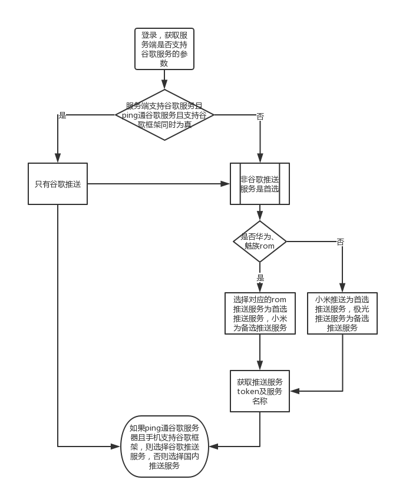

去年公司在sip通话app终于要在国内推广了，之前的app只支持国外的谷歌推送，国内使用的是6.0之前的保活神器-Native保活库MarsDaemon。可惜安卓6.0之后Native保活已经不好用了，所以实际上公司的app在国内只能呼出sip电话，却很难接到来电，这是一个很尴尬的问题。所以在和ios的进度基本相同后，公司开始考虑国内推送功能，之前我也进行了接近半年的预研工作，自认为对国内推送还是比较有把握的，就愉快的入坑了。
推送方案一开始定的是根据机型选择，如果是华为/小米就用各自厂家的推送方案，否则就使用第三方极光推送。这里还有个关键点，就是国内国外的推送方案选择。因为我们公司的产品既有可能部署在国内也有可能部署在国外，而客户端也是这样，所以这个国内国外的推送选择既要考虑客户端是否支持谷歌推送，也要考虑服务端是否支持谷歌推送。最终的推送方案如下图所示
后来进入挂机测试，发现国内推送的支持有各种问题，主要还是在可靠性上，在不充电的状态下，完全kill app后，华为和小米的推送到达率和及时率都有问题，只能达到80%左右的通话到达率。这样的可靠性达不到公司设定的目标，后来尝试加入推送重发机制，效果还是不理想。最后只能放弃纯靠推送，改为保活为主，推送为辅的机制，参考了微信Android客户端后台保活经验分享 。最终在网上找了白色保活库HelloDaemon，主要还是要引导用户开启保活相关功能，并且加入了国内手机的白名单引导设置。本以为这样的完了，可是在实际测试中还是会遇到一个问题，华为手机经常随机的出现网络被限制住的情况，期间各种手段都尝试过，效果都不理想，最后偶然发现